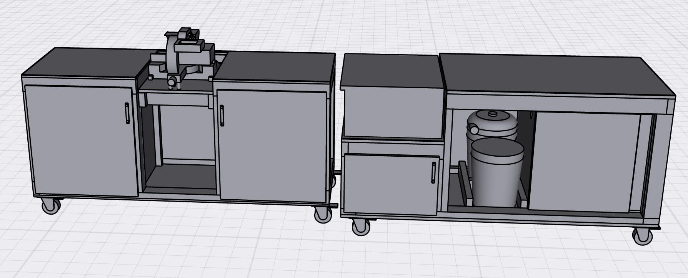
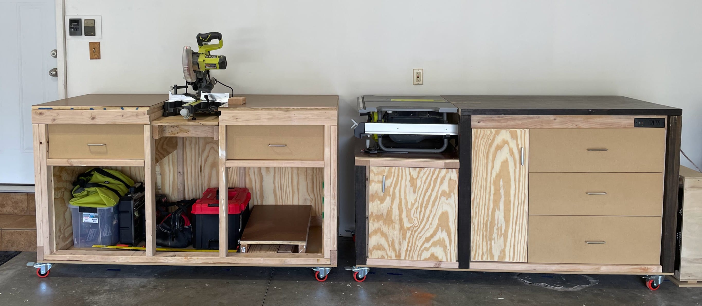
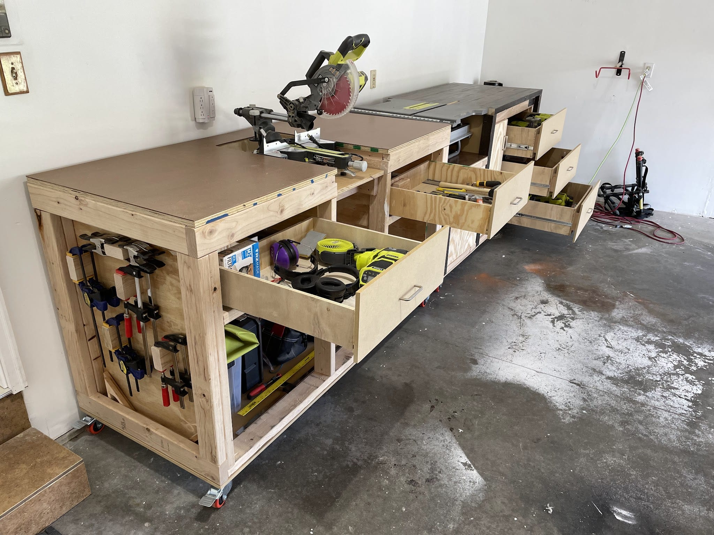
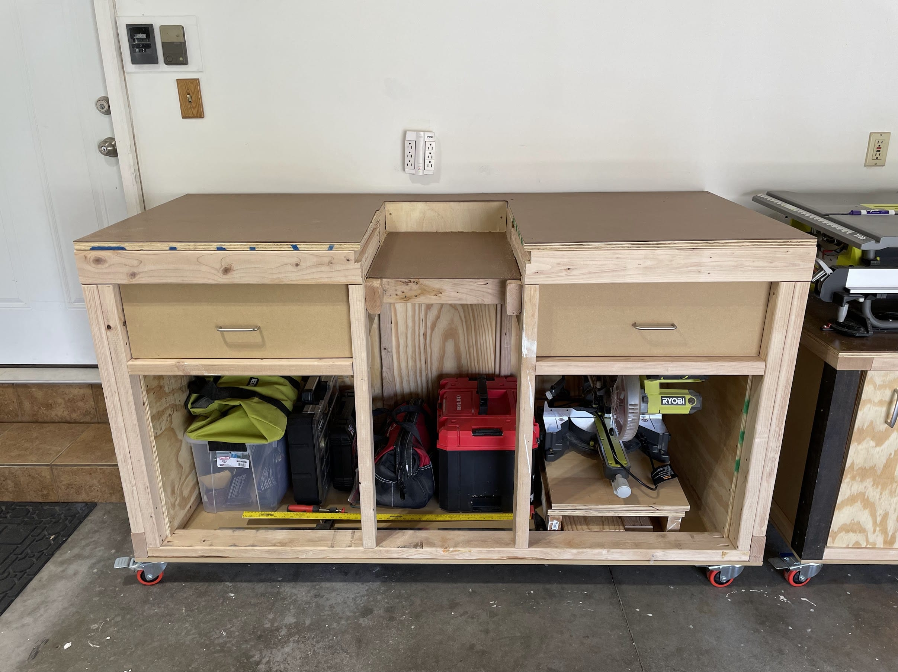
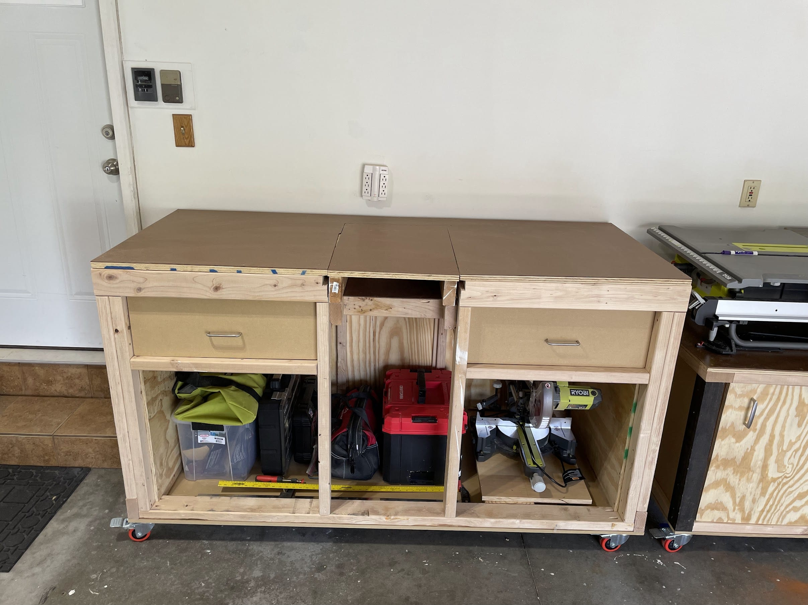

Almost exactly a year ago I got very interested in the idea of building a workbench. This Column celebrates the ups and downs that eventually lead to my (mostly) complete project.
Design
I knew from the outset that I wanted to design my own product. There are hundreds of plans you can buy or find for free online if you’re so inclined - but I didn’t want someone else’s workbench. I wanted something fit exactly to my specifications. I wanted to define and execute on my own requirements. In short, I wanted my workbenches to be mine.
My Requirements
My self-imposed requirements were as follows:
- Function as a work top
- Function as tool storage
- Be movable by one person
- Fit in garage with both vehicles
- House my table saw, miter saw, and dust collection
- Closeable with no tools showing (except the table saw)
- Have integrated power management & cleaning
- Look relatively nice
- Able to be secured to a trailer or truck bed.
- Utilize as much already on-hand lumber as possible.
Design Iterations
The first ~8 months of work on this project were done purely with pen & paper (or Apple Pencil and digital paper). I went through at least a dozen iterations on the design. Sometimes throwing out requirements in the name of better serving other ones.
Several iterations of each of the ideas below were sketched out at some point over the past year:
- A small, modest folding workbench
- A large 4x8 workbench built to fit under a single sheet of plywood
- A workbench with a pegboard upper part & a light
- A pair of 2x8 workbenches
- A pair of 2x4 workbenches
- A single 2.5x6 workbench
- A pair of 2.5x6 workbenches
“Final” Design
What I ultimately went with was a pair of 2.5x6 workbenches, each one built around a ‘main’ saw (miter saw & table saw).

That size was picked because I had a 2.5ft x 8ft butcher block table that I wanted to re-use, but my garage wouldn’t allow for 16 feet of workbenches side-by-side without interfering with the door. Also having 2 workbenches instead of one very long one makes it much more configurable and maneuverable.
As Built
I finally satisfied my >1 year-long itch to build a workspace that I could take with me whenever I move to my next house. They’re 3 1/2 feet tall, otherwise known as 6 inches taller than a ‘standard’ countertop. This is by design, as standard counters are made for standard (i.e. non-6’9” tall) individuals. They’re 30 square feet of work space. Collectively they have 5 drawers, 2 (soon to be 4) cabinets, and house two major saws and all the rest of my tools.
Introducing my two workbenches, nicknamed “Slowly” and “Shirley”.


Slowly
Slowly was started in early March. Immediately I went off-script from the CAD design, and thus suffered a lot of setbacks that slowed my progress significantly. Hence the name.
![https://lh3.googleusercontent.com/j_og0QR4JVyGcs4K64hRm-mynh1iwwtEfBaj1Sb9aq0CzZssU693o0KPjq6-HCtGTML8f3Wqe0FTlyvzzA6yOi1FXpFcIAoEOOjUucyY7BsBSvMmqqysXoQsJ-Koz_DojTVTJYqxpi6ANgrokl3f6hJHQzSM3SWI_pR15UOnLgmMuvvwxptNvTsAO9D9qQyUHiBTHtMQpixH5S2xr5zgA0gpOLLPxuTv2RPy2REe4vmGJl6LzV9Ai4RAJroSldhSENGu4g6oYrFfLsAkcw21ildZ3Gd5vXBON1ylCS18Po7vqSuVzIpBP1oBX8oDiBoCsidNGlcpP9A2FrF_EixQF5LXJ_6PfZWBEEIxgfwKQSiWLk3jGPSdxbE8p3ryv2NGdq13mpvfr5YqgwM73y1BByquF9Lf3KHljH12c6LAbVFgyW-woLoFgDAtjzMt74U84375U8dSBqLPVF7zP9TkcMHiBY0wlft_prPzC3lx5T5IKnVHuGsaiZiVp2z-QEu45IDuoUAstGTGMGWsa95g_OXNu8y0HHnIIJW62Hn1cVEjOpFgUhvERm_3fqmsNKWmSF95CYuYNUufnWcHTCTLbNCP5Oe4X7cr2FSNXyMDpVhXg1buwF_GLf3xCJopaVIN8MWveoWjhy6QiDOBrjTHn0D4L4sjzrSjHezjaoh27EMJBgNzVLYOPJq6rLure1r37StsIsr9HU7g9On9tB-sRJvWqa9NzzamLyKKcjjSFcFpr1NrKlgH04tvFZybf_k=w836-h627-no?authuser=0](https://lh3.googleusercontent.com/j_og0QR4JVyGcs4K64hRm-mynh1iwwtEfBaj1Sb9aq0CzZssU693o0KPjq6-HCtGTML8f3Wqe0FTlyvzzA6yOi1FXpFcIAoEOOjUucyY7BsBSvMmqqysXoQsJ-Koz_DojTVTJYqxpi6ANgrokl3f6hJHQzSM3SWI_pR15UOnLgmMuvvwxptNvTsAO9D9qQyUHiBTHtMQpixH5S2xr5zgA0gpOLLPxuTv2RPy2REe4vmGJl6LzV9Ai4RAJroSldhSENGu4g6oYrFfLsAkcw21ildZ3Gd5vXBON1ylCS18Po7vqSuVzIpBP1oBX8oDiBoCsidNGlcpP9A2FrF_EixQF5LXJ_6PfZWBEEIxgfwKQSiWLk3jGPSdxbE8p3ryv2NGdq13mpvfr5YqgwM73y1BByquF9Lf3KHljH12c6LAbVFgyW-woLoFgDAtjzMt74U84375U8dSBqLPVF7zP9TkcMHiBY0wlft_prPzC3lx5T5IKnVHuGsaiZiVp2z-QEu45IDuoUAstGTGMGWsa95g_OXNu8y0HHnIIJW62Hn1cVEjOpFgUhvERm_3fqmsNKWmSF95CYuYNUufnWcHTCTLbNCP5Oe4X7cr2FSNXyMDpVhXg1buwF_GLf3xCJopaVIN8MWveoWjhy6QiDOBrjTHn0D4L4sjzrSjHezjaoh27EMJBgNzVLYOPJq6rLure1r37StsIsr9HU7g9On9tB-sRJvWqa9NzzamLyKKcjjSFcFpr1NrKlgH04tvFZybf_k=w836-h627-no?authuser=0)
It is built to both house and act as an outfeed table for my table saw. It houses my dust collection system (shop vac, 5 gallon bucket, and dusttopper) and has onboard power. You plug in the workbench as a unit (using an extension cord plugged into the side of the workbench) and in so doing you’ve provided power to the table saw, the shop vac, the power-based vacuum switch, and provided power to the outlet on the front of the unit.
It also has 3 equal-sized drawers that are wide enough and deep enough to hold pretty much all the tools I own (28” wide, 26” deep, 10” tall on the inside). These drawers use side-mounted full-extension soft-close drawer slides.
Slowly is not square, but instead a bit of a parallelogram in two dimensions. The whole thing started with a skeleton that was slightly askew when initial measurements were taken. These were made permanent when the flat side pieces were cut. This meant everything after that had to be cut-to-fit. This, again, lead to its nickname.
Shirley
Shirley was started in mid-April. When building Shirley, I stayed 95% faithful to the CAD design and didn’t repeat some early mistakes I made with Slowly. This made Shirley come together correctly the first time, without surprises, and no rework.

Shirley was built around my miter saw. When in place, the miter saw sits in the center of the table, flush with the surface. The miter saw can be removed to leave gap where it normally goes, or I can insert a piece there to give it a flat seamless1 top:

Shirley has two, slightly smaller drawers (24” wide, 24” deep, 6” tall on the inside) and were mounted using under mount, full-extension soft-close drawer slides. They are also inset ~1 inch from the front face of the workbench to make room for clamps to be used on the front face of the bench. Underneath the drawers is currently one open void for bulk item storage. On the left face is clamp storage, on the right face is currently nothing.
Left to Do
They are functional. They work well. However they are also incomplete. I will be (at some point) painting them. The cabinet doors are made of plywood and the drawer fronts are made from MDF. This gives them a very inconsistent look, which I don’t like.
My original design decision was to make my entire workbench setup “closeable” to keep out spiders and not advertise tools passers-by. As such, the front will (probably) (at some point) (maybe) be adorned with cabinet doors - soft close, like everything else.
What I Learned
Just as important (or more so) as the final product is the things I learned in the process of making them.
About Crafting
Model-Based Benefits
I used my iPad and an application called “Shapr3D” to do the CAD work. It saved my bacon.
I will 100% be designing everything I build from now on using some form of 3D CAD program before putting saw to wood.
I made so many fundamental changes with how things went together along the way. I thought an idea would work, built basically the whole workbench digitally, then found some piece that made the design unworkable. Without the model-based approach first, I would have literally built myself into a corner.
Clearly visualizing the details in advance prevents rework.
If you have a vague notion of how the thing you’re building will go together, you will build yourself into a situation you hadn’t anticipated. Each new part will be some part of error correction for issues introduced by the part before it. Eventually you may find yourself with an M. C. Escher drawing instead of a workpiece.
If you know how things will fit together exactly… then they probably will do just that. Otherwise you’re going to have occasions where you spend an hour undoing something that took you all day to do in the first place.
Always measure, but not always with a measuring tape.
Measuring a piece by putting it across the gap it will span and making a mark is easier, more accurate, and less prone to error. The more I worked on these, the less often I measured things with a measuring tape and the better things fit together.
Bulk processing yields better precision.
Bulk cutting using a stop block in conjuction with your miter saw makes cutting a repeatable lenght easy, just like setting your fence on your table saw. Speaking of which, set your fence on your table saw.
Always triple check what you’re doing before you do bulk cuts, though. Nothing sucks worse than ripping down all your boards to 12 inches wide when they were all supposed to be 14 inches.
Drawers are hard.
Making drawers requires better precision than I typically used. Always do bulk, repeated cuts on the table saw to make all 4 sides of your drawer at once. They need to be square, or else they’ll pinch and pull when you slide them in and out.
If possible, make the drawers first, then the cabinet that houses them. The cabinet is easier to adjust than the drawers are.
Undermount drawer slides are dope.
Undermount drawer slides are intimidating at first, but they shouldn’t be. They are bigger and have more bits and pieces, sure, but they are actually more forgiving and wind up looking better and working better. They’re more expensive, but they’re worth it.
Check square by measuring across both diagonals.
If you want to see if something you’ve made is a proper rectangle, measure an X across its diagonals. If both diagonals are the same length, congrats.
Clamps = good.
Nuff said.
About Life
I’m Susceptible to the Planning Fallacy.
The planning fallacy essentially states that planners are overly optimistic and fail to account for things. I assumed at one point that I’d be able to knock out these benches over the course of a few long days once I started building.
I reckon I spent >100 hours building them. I was only off by an order of magnitude.
DIY isn’t always cheaper.
I didn’t track the costs of building these benches, but I’d estimate they were essentially on par with the cost of just building pre-built ones… if not a little more expensive.
Small progress, consistently.
I should be thanking James Clear, but instead I’ll thank my wife who reminded me of what I read about in Atomic Habits.
I routinely got frustrated with my own lack of progress. The number of times I walked into the garage with the intention of “definitely finishing them today” only to walk back in the house ~6 hours later with very little to show for it… was demeaning. I was trying to sprint a marathon.
You know what works better? High-intensity interval training. Pomodoros. Chunking. All of these concepts and metaphors work better than building until you’re sick of building, but you can’t be done yet because you’re not done yet.
By the end of the project I was simply taking an hour so each night to knock it out in bits and pieces. Little progress, consistently.
Top 5: Things I’d Do Different if I were Starting from Scratch
5. Subvert my inner Leeroy Jenkins
Not sticking to the plan caused a lot of rework and hard lessons.
4. Wait to enclose the shell
The first thing I did with Slowly was build the top, bottom, and all the sides. That meant I constantly having to sit on the floor or scrunch up in a little ball to fit inside the thing to do things like mount drawer slides.
3. Buy better lumber
I used studs I had left over from a previous application. They were not nearly as nice as the project boards I bought at the end.
2. Paint the faces before installing them
Now that the benches are together & functional, I do not want to take them apart for “finishing touches”
1. Plan for the long haul
I had no idea how many hours it would take me to build these. I went in with very wrong expectations and I set up Melissa with those same wrong expectations. She’s a champ and trooper and has stuff of her own, thankfully, but we would have both been better off if I had a better appreciation for the magnitude of work.
Quote:
I think I can finish today Me, incorrectly, several times
Footnotes
-
”Seamless” here means “definitely has seams, but get off my back about em.” ↩